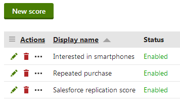
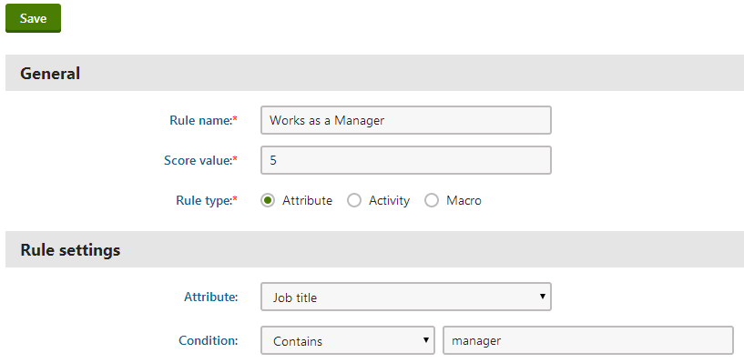
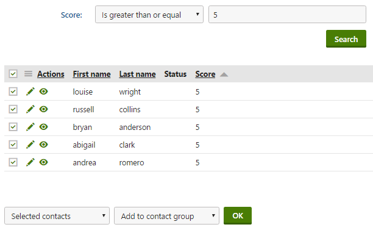
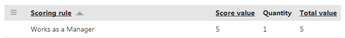

Managing contact scores
Scoring is an on-line marketing technique that allows you to evaluate visitors of your websites. Visitors are represented by contacts. Each score calculates a numeric value based on contact's properties or actions performed on websites.
You can set up scoring for your websites in the Scoring application. The initial page displays a list of scores defined for all sites.

List of defined scores
To manage existing scores, use the following basic actions:
Edit (
 ) – opens the score's editing interface, where you can configure the score and view the points calculated for contacts.
) – opens the score's editing interface, where you can configure the score and view the points calculated for contacts.Delete ( ) – deletes the score.
Creating scores
In the Scoring application, click New score.
Enter a Display name and optionally a Description for the score.
Leave the Enabled check box selected.
You can temporarily stop the system from calculating the score for contacts by disabling this option.
(Optional) Use the Send notification at score and Notification email address fields to define whether the system should send a notification when a contact reaches a certain score.
Modifying how notification emails are sent
Administrators can modify the template of the notifications that the system sends in the Email templates application.
Administrators can specify the sender email address in Settings -> System through the Send email notifications from setting.
Click Save.
New scores do not have any functionality by default. You need to create scoring rules to determine how the score calculates points for contacts.
Kentico EMS required
Features described on this page require the Kentico EMS license.
Defining scoring rules
Scores assign points to contacts according to a set of rules. Contacts that fulfill the conditions of the scoring rules either gain or lose points within the given score.
To add scoring rules to a score:
Edit (
) the scoreSwitch to the Rules tab.
Click New rule.
Enter a Rule name.
Set the rule's Score value.
This is the number of score points that the system assigns to contacts who fulfill the conditions of the scoring rule.
You can use both positive and negative values.
Select the Rule type:
Activity – rules based on activities performed by contacts on the websites.
Macro – rules based on macro conditions.
Assigning score points based on contact attributes
If you choose the Attribute rule type, continue with the following rule settings:
Select which Attribute (contact field) the rule evaluates.
You can use both default and custom contact fields.
Configure the Condition for the field's value.
Select one of the comparison options and enter the required text or numeric value.
Save the rule.
The score applies the rule to all contacts whose value in the selected attribute meets the specified condition.

Defining a score rule
Assigning score points based on activities
If you choose the Activity rule type, continue with the following steps:
Select which Activity the rule monitors.
You can select both default and custom activities.
Specify any conditions that the details of the activity must fulfill.
Property
Description
Activity performed between
The score applies the rule only if the activity is logged within the defined time interval.
Activity value
The score applies the rule only if the activity's value fulfills the specified condition.
Only available for activities that have an associated value.
Page
The score applies the rule only if the activity was logged on the selected page.
Note: The Page field is not available on "content only" sites (i.e. sites created using the MVC Blank Site template), where the content tree does not represent the structure of the actual website.
Activity URL
The score applies the rule only if the activity occurred on a page with a URL that fulfills the specified condition.
Note: If specifying the URL with the Starts with or Equals modifier, the URL must be absolute.
Activity title
The score applies the rule only if the title of the activity fulfills the specified condition.
Activity comment
The score applies the rule only if the activity comment text fulfills the specified condition.
UTM Source
The score applies the rule only if the visitor who performed the activity arrived on the website from a source (utm_source query string parameter value) matching the specified condition.
Campaign
The score applies the rule only if the visitor who performed the activity arrived on the website through a campaign with a name that matches the specified condition.
Culture
The score applies the rule only if the activity occurred on the selected language version of the website.
URL referrer
The score applies the rule only if the URL referrer of the contact who performed the activity matches the specified condition.
The referrer is the URL from which the contact arrived on the page where the activity occurred.
_
Configure the following properties in the Validity section:
Property
Description
Recurring rule
Indicates whether the rule applies to all occurrences of the activity.
If checked, the score adds points to contacts for every activity that matches the rule. Otherwise only the first activity that matches the rule affects the contact's score.
Max. rule points
The maximum number of points that contacts can receive as a result of the rule. This allows you to limit the effect of recurring rules.
Validity
Determines how long the score points will be added to contacts after they perform the activity. After the specified time period, the system subtracts the rule points from the contact's total score.
To set your activity rule's validity for an unlimited period of time, choose Until and leave an empty date and time value (or click N/A).
_
Save the rule.
The score applies the rule to all contacts who have performed an activity that matches the specified conditions. If the rule is recurring, it can affect the score of contacts multiple times.
Assigning score points based on macros
Specify the condition in the Condition field.
Save the rule.
Using form data in score macro rules
You can create macro conditions that score visitors based on the information they enter into form fields.
Recalculating scores
If you add, remove or modify the rules of an existing score, you also need to recalculate the score points of contacts. Otherwise, the scoring data will not reflect the new rules.
You do not need to recalculate scores to refresh the point values according to the latest contact data of your websites (scores do this automatically).
To run the recalculation process:
Open the score's Rules tab.
Click Recalculate.
The recalculation dialog box opens.
Schedule the recalculation time:
Now – the recalculation starts immediately.
Later – set an exact date and time in the future.
Planning recalculation for a future date
When you plan a score recalculation for a future date, the system automatically creates a scheduled task, which runs the recalculation process at a required time. To see the recalculation tasks planned for your websites, navigate to the Scheduled tasks application -> System tasks tab. The tasks use names in format:
Score '<score rule name>' recalculation
Click Save & Close.
When the recalculation finishes, the system updates the score points of all contacts according to the current rules.
Recalculation performance
You can significantly improve scoring recalculation performance by implementing a data query translation of your custom macro rules.
Do not run the recalculation during the peak traffic hours of live websites. Score recalculation can be a resource intensive process that may reduce the website performance.
Recalculation resends all email notifications set up for the score (if contacts achieve the required number of score points after the recalculation).
Setting up email notifications for scores
You can configure scores to send email notifications when contacts reach a certain number of score points. This allows you to automatically distribute information about interesting contacts. For example, you can set up email notifications for scores that indicate when contacts are likely to become customers.
Prerequisites: You must have an SMTP server configured for your websites.
Edit (
) the score and open the General tab.Type the minimum number of score points into the Send notification at score field.
Enter the target address for the notification emails into the Notification email address field.
To specify more than one recipient, add multiple addresses separated by semicolons (;).
Your administrator can set the sender email address in Settings -> System through the Send email notifications from setting.
Save the score.
Whenever a contact reaches the specified number of points in the score, the system sends a notification email to the target addresses.
Tip: Your administrator can modify the content of the notification by editing the Scoring - Notification email template in the Email templates application.
Monitoring the scores of contacts
To view the scoring results for your websites, edit (
) a particular score and open the Contacts tab. Here, you can find a list of all contacts that have points in the given score. The filter above the list allows you to view only the contacts whose score value matches certain criteria.
Note: You may notice a delay in the points calculated for scores with activity rules. It takes up to several minutes before the system updates the score points for the performed activities.

Viewing contact scores
Managing contacts from the score overview
Clicking View contact details (
) opens the given contact's editing interface. This allows you to view the details of the contact and modify its properties.
When evaluating the scores of contacts, you can manually add contacts to a contact group or change their status:
Choose which contacts to manage:
Selected contacts - mark contacts using the checkboxes next to the list.
All contacts
Select the Add to contact group or Change status action.
Click OK.
You can also View score details ( ) for each of the contacts. This opens a separate dialog that shows exactly which scoring rules contributed to the contact's total points in the given score. You can view the following data for all relevant scoring rules:
Rule value – this is the value set in the rule's definition. The system adds this number to the contact's score every time the score meets the rule criteria.
Quantity – shows how many times the Rule value has been added to the contact's score.
Total value – the total score calculated by multiplying the previous two values.

Viewing detail for a particular score
Tip: To view all scoring data for a specific contact, switch to the Contacts section and view contact details (
) of the given contact. On the Profile tab, you can see all scores where the contact has points.